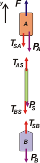

|
NO ME SALEN
PROBLEMAS RESUELTOS DE FÍSICA DEL CBC
(Leyes de Newton)
|
|

|
| |
FIS d12 - Dos cuerpos de masa mA = 5 kg y mB = 3 kg están vinculados entre sí a través
de una soga de masa ms = 5 gr,
pequeña comparada con mA y mB.
Se desprecia el rozamiento entre
los cuerpos y el aire. Se tira del
cuerpo 1 con una fuerza cuyo
módulo es |F| = 1000 N.
a) Realizar el diagrama de cuerpo
libre para cada cuerpo y para la
soga.
b) Indicar cuáles son los pares
de acción-reacción.
c) Si la soga es inextensible (la
distancia entre todo par de puntos
pertenecientes a ella permanece constante), calcular
la velocidad y la aceleración de cualquier
punto de la soga, y la velocidad y la aceleración
de los cuerpos.
d) Para cada cuerpo, determinar el valor de
cada una de las fuerzas actuantes y el de la fuerza
neta o resultante.
e) Si ms → 0, ¿qué sucede con la fuerza que la
soga ejerce sobre cada cuerpo? |
 |
|
Este ejercicio es muy sencillo, y posee varias enseñanzas fundamentales. Trataré de destacarlas todas. Lo primero, como siempre son los DCLs.
|
|  |
Primero: nunca hay que olvidarse de consignar un Sistema de Referencia (SR). Fijate, en el esquema, es la flechita que apunta hacia arriba y que llamé y (el nombre es arbitrario).
Segundo: Tratá de nombrar a las fuerzas de este modo, orgánico. Si un cuerpo X le hace una fuerza al cuerpo Z, llamá a esa fuerza FXZ. Es lo más sencillo del mundo y te alegra la vida.
Tercero: Los pesos de ambos cuerpos no tienen por qué ser iguales (en este caso no lo son), por lo tanto hay que individualizarlos, y los llamé PA y PB, respectivamente.
Una vez finalizados los DCLs, vienen las ecuaciones de Newton:
ΣFA = mA a → F — TSA — PA = mA . a [1]
ΣFS = mS a → TAS — TBS = mS . a [2]
ΣFB = mB a → TSB — PB = mB . a [3]
|
|
|
Si vos sos de los que se resisten a utilizar subíndices... estás en la lona. Dedicate a otra cosa. |
Cuarto: a las aceleraciones de los cuerpos no les puse subíndice, por el hecho de que nuestra soga es inextensible y eso asegura que las aceleraciones de ambos cuerpos y de la propia soga sean iguales. A esa aceleración, a, solemos llamarla: la aceleración del sistema.
Ahora resolvemos el sistema de las dos ecuaciones y hallamos las incógnitas: si las sumamos miembro a miembro obtenemos...
F — PA — PB = (mA + mS + mB) . a
Despejamos la aceleración, la calculamos: |
|
|
| a = |
|
F — PA — PB |
|
|
| mA + mS + mB |
|
|
|
| Con ese valor vamos a cualquiera de las ecuaciones de Newton (acá lo hice en la [3]), depejamos T2 y la calculamos: |
|
|
| TSB = |
|
PB |
+ |
mB . (F — PA — PB) |
|
|
| mA + mS + mB |
|
|
|
| |
a = 114,928 m/s² TSB = 374,785 N TSA = 375,360 N |
|
|
|
|
Fijate que las fuerzas que hace la soga en ambos extremos son muy parecidas, casi iguales, si hubiese expresado los resultados redondendo, como hacemos siempre, les habríamos puesto a ambas lo mismo, 375. Y la aceleración 115.
Esto ocurre porque la masa de la soga es despreciable frente a las masas de los otros cuerpos que aparecen en el sistema. En adelante las sogas que presentaremos en los ejercicios directamente las consideraremos sin masa. Diremos de ellas que son sogas ideales: imponderables (sin masa), inextensibles (igual aceleración en toda su longitud) e importadas(no escatimamos en gastos).
Una de las consecuencias inmediatas de las sogas ideales es que ejercien igual fuerza en ambos extremos. Diremos: trasmiten las fuerzas sin modificación en el módulo.
Acá tenés el mismo ejercicio (con otros valores) considerando la soga ideal. |
|
|
|
|
|
| |
|
 |
DESAFIO: |
|
| Algunos reservados (no es que sean tímidos, callados).
Se permite su reproducción citando la fuente; se puede prestar y/o regalar, se prescriben abrazos como recompensa. Última actualización mar-16. Buenos Aires, Argentina. |
|
|
|